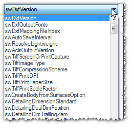
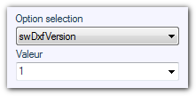
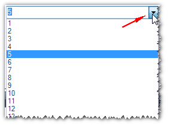
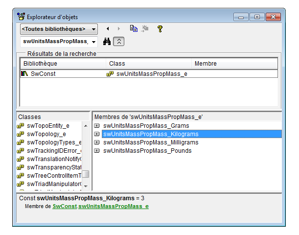

Opération possible sur les pièces, les assemblages ou les mises en plan. 
Cette opération permet d'accéder aux options type "Valeur entière" des documents. Pour plus d'information sur l'utilisation de ces paramètres, voir aide API (Aide/Aide API).
 L'utilisation de cette opération est réservée aux utilisateurs avancés.
L'utilisation de cette opération est réservée aux utilisateurs avancés.
Le choix se fait parmi une liste d'option correspondant à l'énumérateur "swUserPreferenceIntegerValue_e" :


Le numéro de la valeur est à choisir parmi une liste. Ce numéro doit être numérique. Il peut être saisi au clavier ou à l'aide de la liste déroulante :

Exemple : Comment changer les options d'unités du document SOLIDWORKS sur longueur=mm et masse=Kg ?
- 1° On change les unités du système sur "custom".
L'option "swUnitSystem", dans la liste des "Options du document (Nombre entier)", doit être égale à l'enumérateur "swUnitSystem_e" qui contient :
swUnitSystem_CGS = 1
swUnitSystem_MKS = 2
swUnitSystem_IPS = 3
swUnitSystem_Custom = 4
swUnitSystem_MMGS = 5
- 2° On change les unités de longueur sur "mm".
L'option "swUnitsMassPropLength", dans la liste des "Options du document (Nombre entier)", doit être égale à l'enumérateur "swLengthUnit_e" qui contient :
swMM = 0
swCM = 1
swMETER = 2
swINCHES = 3
swFEET = 4
swFEETINCHES = 5
swANGSTROM = 6
swNANOMETER = 7
swMICRON = 8
swMIL = 9
swUIN = 10
- 3° On change les unités de masse sur "kg".
L'option "swUnitsMassPropMass", dans la liste des "Options du document (Nombre entier)", doit être égale à l'énumérateur "swUnitsMassPropMass_e" qui contient :
swUnitsMassPropMass_Milligrams = 1
swUnitsMassPropMass_Grams = 2
swUnitsMassPropMass_Kilograms = 3
swUnitsMassPropMass_Pounds = 4
Remarque 1:
Pour trouver ces énumérateurs et leurs valeurs, le plus simple est de faire un enregistrement de macro. Ici pour cette même action on retrouve les valeurs expliquées plus haut.
Sub main()
Set swApp = Application.SldWorks
Set Part = swApp.ActiveDoc
boolstatus = Part.Extension.SetUserPreferenceInteger(swUserPreferenceIntegerValue_e.swUnitSystem, 0, swUnitSystem_e.swUnitSystem_Custom)
boolstatus = Part.Extension.SetUserPreferenceInteger(swUserPreferenceIntegerValue_e.swUnitsMassPropLength, 0, swLengthUnit_e.swMM)
boolstatus = Part.Extension.SetUserPreferenceInteger(swUserPreferenceIntegerValue_e.swUnitsMassPropMass, 0, swUnitsMassPropMass_e.swUnitsMassPropMass_Grams)
End Sub
Par contre, dans la macro, on ne trouve pas les valeurs (où sont enregistrés les énumérateurs). Pour retrouver la valeur contenue dans un énumérateur, il suffit d'appuyer sur F2 dans l'éditeur de macro et l'explorateur d'objet apparaît. En tapant le nom de l'énumérateur, par exemple « swUnitsMassPropMass », dans la recherche, on visualise les variables et les valeurs contenues.

Remarque 2:
Par cette méthode il est possible de piloter toutes les options de SOLIDWORKS
Case à cocher (exemple "Habillage/Toujours afficher le texte avec la même taille")
Nombre entier (exemple changement d'unité comme ci dessus)
Nombre à virgule (exemple "Annotation/Longueur de la ligne d'attache")
Texte (exemple "Annotation/Références/Prochain label")
Remarque 3:
Certaines options sont liées les unes aux autres, comme dans l'exemple ci-dessus.
Si l’on n'avait pas réglé les unités du système sur "custom", le changement d'unité de masse et de longueur aurait été sans effet.
Remarque 4:
Ceci permet le réglage des options du document uniquement (onglet "Propriétés du document").
Les options du système ne sont pas concernées par un traitement batch.